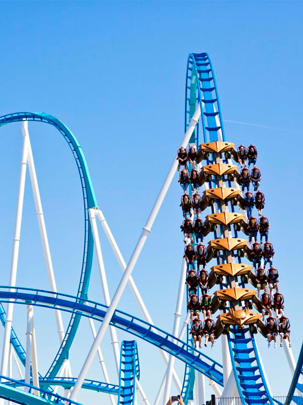
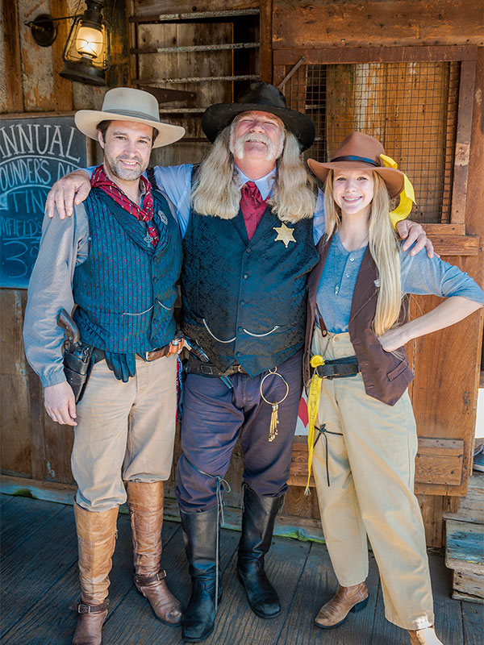
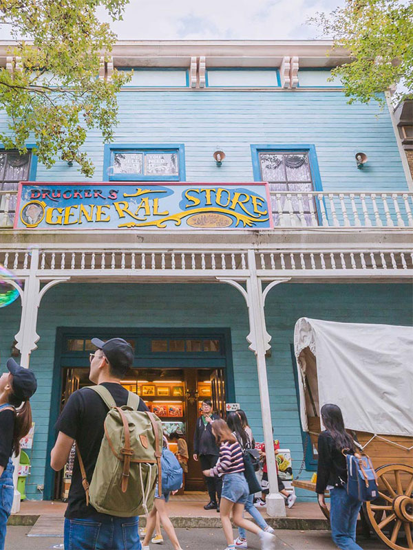
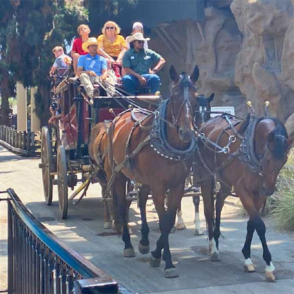

伊飛沖天
在九十秒歷程中，挑戰達六層樓高的巨幅擺盪，以及雙腳懸空人體極限3G重力加速度外拋與三百六十度正反向空中旋轉，邀請年輕遊客前來挑戰膽量極限

西部農莊
兒時憧憬的美國西部場景，此刻真真切切的出現在你眼前，坐在牛仔快車 一起進入西部農莊的世界！
急流泛舟
這是美國大西部內最大型的遊樂設施，亦是目前國內最大型的人工泛舟河道，水道全長七百四十公尺，每艘圓型橡膠船可乘坐二至九人，全程約七分鐘

西部農莊
兒時憧憬的美國西部場景，此刻真真切切的出現在你眼前，坐在牛仔快車 一起進入西部農莊的世界！

西部農莊
兒時憧憬的美國西部場景，此刻真真切切的出現在你眼前，坐在牛仔快車 一起進入西部農莊的世界！
空中UFO
以三百六十度轉動，倒轉世界狂飆，瞬間帶領您進入超高速的神秘世界中，有膽量的朋友千萬別放棄這個挑戰自己的機會
摩天輪
亞洲第一座U型滑軌懸吊式螺旋雲霄飛，軌道全長190公尺，最大落差達56公尺，瞬間最高時速122公里

西部農莊
兒時憧憬的美國西部場景，此刻真真切切的出現在你眼前，坐在牛仔快車 一起進入西部農莊的世界！